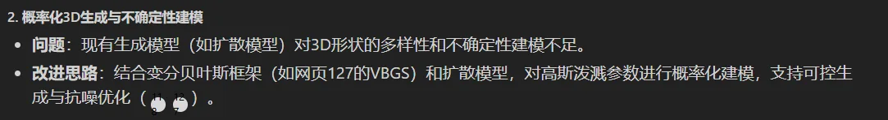

概要：图像和相机位姿同时进入image encoder，输出point_cloud/triplane tokens；point tokens经过点云decoder并结合投影感知条件进行上采样与扩充得到稠密点云，然后与tri tokens一起作为条件输入到tri decoder中，得到tri_features。稠密点云与tri_features混合得到Hybrid Features，经过Gaussian decoder（其实就是一个MLP）输出GS参数，最后进行快速可微光栅化渲染得到3D以及Novel View Image。
Hybrid Triplane-Gaussian
Hybrid Triplane-Gaussian
之前工作：将3DGS看作具有特定属性的显式点云；调整现有点云以获得除点位置以外的其他3DGS属性
ours： Triplane + Gaussian，融合二者优点
==3DGS_Decoder== \[ (\Delta x\prime ,\alpha,s,q,sh) = \Phi _ g (x,f) \]
\(x\)是从点云获取来的三维坐标 , \[\Phi_g\] 是MLP，特征为 \[ f\] , \(\Delta x\prime\) 是什么东西？
\(f = f_l + f_t\) , 其中 \(f_t\) 是三平面特征 \(f_t = interp(T_{xy}, p_{xy}) ⊕ interp(T_{xz}, p_{xz}) ⊕ interp(T_{yz}, p_{yz})\) ， \(f_l\) 是局部投影特征，通过相机pose \(\pi\) 和point cloud \(P\) , 借助投影函数 \(\Rho\) 得到： \(f_l = \Rho (\pi , P)\)
local features 包括RGB、DINOv2、mask以及针对mask的二维距离变换 , \(f_l\) 可以提升纹理质量
Rendering
GS_differentiable_rasterization
Reconstruction from Single_View images
实现两个基于decoder分别从image中decode point_cloud 和 triplane ；
输入图像特征和相机特征 都通过 交叉注意力 集成到两个decoder中
Image Encoder
实现自适应层范数借助相机特征来调制DINOv2
相机特征25维，\(T \in R^{4*4}\) + \(K \in R^{3*3}\)
Transformer Backbone
- latent tokens从positional embeddings中初始化
- 视点增强的图像tokens借助cross attention来指导两个decoder
Point Decoder
- 六层transformer 、point_cloud_tokens 、feed_forward
- 只解码一个粗糙的点云（2048点）
点云上采样
- two_state SPD
- 通过投影感知条件（projection aware conditioning）将camera pose 整合到 local image features 中。
Triplane Decoder
- 10层
- 把上采样后的点云也编码到了tokens中，来增强几何感知
- decoder出来之后经过upsample才到triplane中，其中upsample什么作用？
Experiments
训练整体分两步走实现：
- 训练点云解码器，生成高质量几何图
- 冻结点云解码器，训练三平面/高斯解码器
trick：投影感知条件和几何感知编码都是为了增强结果与输入视角的一致性。P.C.增加了纹理和锐化效果。 G.E.增加了清晰锐化效果。
Limitations:
- 如果预测的点云失真严重，就会造成大量空洞。
- 不是一个概率模型，所以容易出现背面模糊。
- 依赖于相机位姿，所以限制应用。
如何改进：
- diffusion生成multi view
